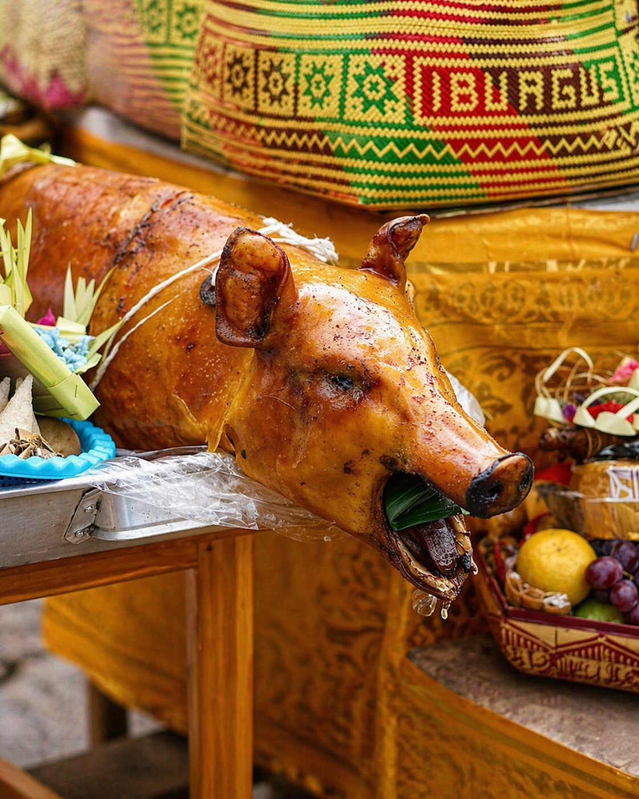
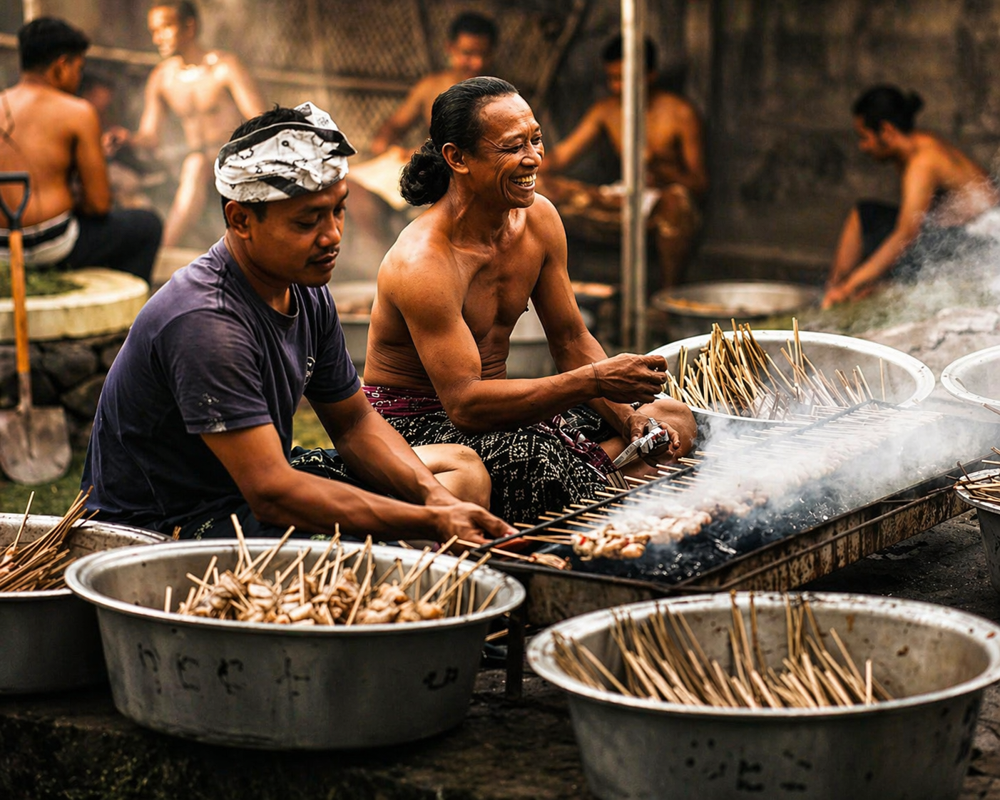
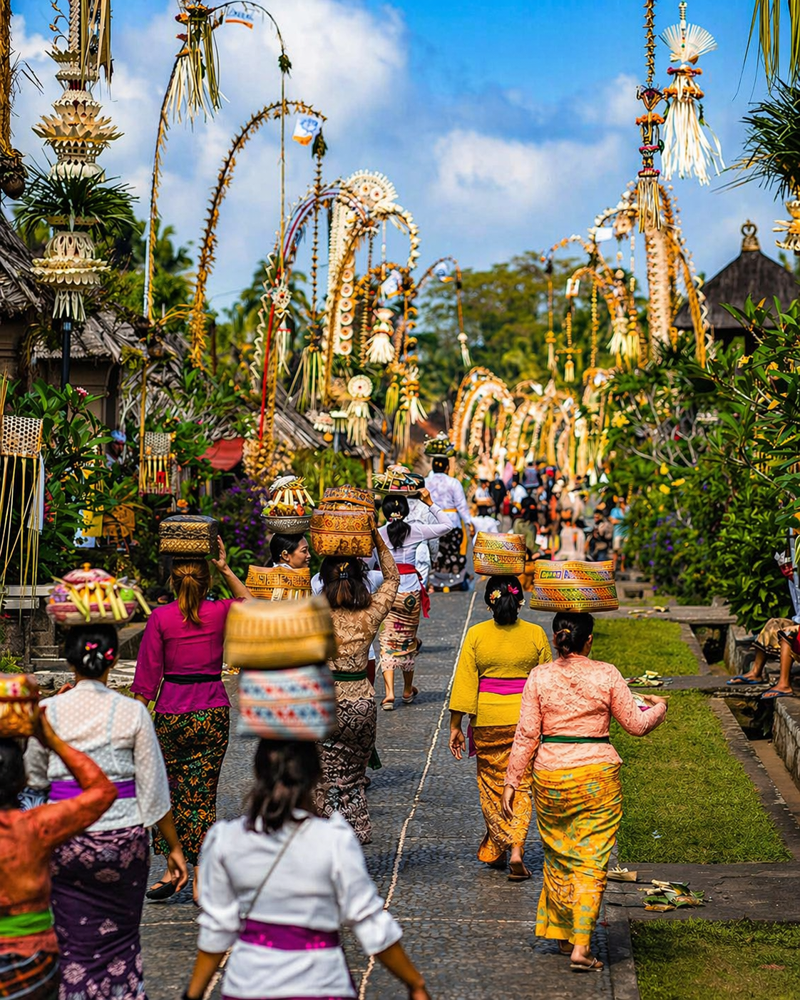

VICTORY OF DHARMA
A joyful island-wide celebration where prayers, family gatherings, and sacred traditions honor the triumph of dharma over adharma.
Galungan symbolizes the eternal victory of dharma, truth, and righteousness over adharma, chaos, greed, and negativity.
Roads across Bali become beautifully lined with Penjor, while homes and temples fill with offerings and ceremonies.
Families reunite, pray together, and honor ancestral spirits believed to return during this sacred festive period.
Beyond celebration, Galungan reminds people to strengthen the heart, live wisely, and maintain balance in life.
The day before Galungan is filled with preparation. Families create offerings, decorate homes, cook traditional dishes, and complete everything needed for the holy celebration.
The main holy day. Families wear ceremonial attire, pray at home shrines and temples, and celebrate the victory of dharma.
The joyful day after Galungan. Many families visit relatives, travel together, enjoy leisure time, and continue the festive atmosphere.
These three days show that Galungan is not only one ceremony, but a meaningful cycle of preparation, worship, and togetherness.
Galungan is celebrated every 210 days according to the Balinese Pawukon calendar, which is approximately every 6 months.
Because it follows the Pawukon cycle, the month changes throughout the years.
Search the latest Galungan date, then estimate around 210 days later for the next celebration.
Ubud, Gianyar, Denpasar, temple villages, and neighborhoods across Bali.
Early morning offers peaceful roads, soft light, and beautiful Penjor views.
Wear modest clothing when visiting temples or family ceremonies.
Temples and roads may be busier during prayer times.
Galungan is one of the best moments to experience Bali’s spiritual family culture.


